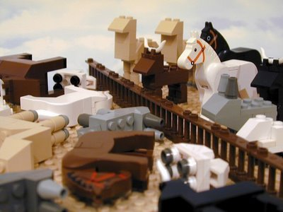
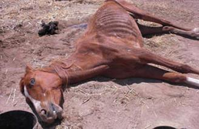

Todos los creyentes monoteístas toman el relato bíblico de las plagas de Egipto como un hecho histórico y no como una ilustración que magnificaba al antiguo pueblo de Israel. La incongruencia en el relato puede verse en lo que supuestamente le ocurrió al ganado de los egipcios, y en concreto al ganado caballar, durante las plagas quinta, sexta, séptima y décima. Tomamos oportunamente los textos de la Biblia de Jerusalén, versión apegada fielmente a los viejos manuscritos.
En el libro de Exodo, 9: 3 y 6, leemos sobre la quinta plaga: “Mira que la mano de Yahveh caerá sobre tus ganados del campo, sobre los caballos, sobre los asnos, sobre los camellos, sobre las vacadas y sobre las ovejas; habrá una grandísima peste… Al día siguiente cumplió Yahveh su palabra y murió TODO el ganado de los egipcios”.
Para los literalistas está claro que murió todo el ganado de los egipcios, tanto el ganado vacuno como el ovejuno, el asnal, el caballar y el de los camellos. Los egipcios, pues, se quedaron sin vacas, sin toros, sin bueyes, sin ovejas, sin carneros, sin caballos y sin camellos. Gran desgracia para los de Egipto, pues no pudieron arar los campos ni alimentarse con productos lácteos ni comer carne ni desplazarse grandes distancias para comerciar. Sin animales, mal podía sobrevivir la civilización egipcia. Aquello fue, sobre todo, un gran infortunio para el ejército, pues perdió lo más preciado que tenía: los caballos, imprescindibles para la guerra. Así, los egipcios estaban ahora indefensos, a merced de cualquier enemigo que quisiera invadir sus territorios.
La sexta plaga la encontramos en Exodo 9: 8 y 10, donde leemos: “Tomad dos grandes puñados de hollín de horno y que Moisés lo lance hacia el cielo, en presencia de Faraón; se convertirá en polvo fino sobre todo el territorio de Egipto y formará erupciones pustulosas en hombres y ganados, por toda la tierra de Egipto. Tomaron, pues, hollín de horno y, presentándose ante Faraón, lo lanzó Moisés hacia el cielo y hubo erupciones pustulosas en hombres y ganados”.
Literalmente dice el relato que, tanto a hombres como a animales domésticos, les salieron erupciones pustulosas o diviesos. Pero, ¿no habían muerto los animales egipcios durante la plaga anterior? ¿Cómo es que les salieron tales flemones purulentos a unas bestias ya difuntas?

En Éxodo 9: 19-25, analizamos el fluir de la séptima plaga: “…el granizo descargará sobre todos los hombres y animales que se hallan en el campo, y cuantos no se hayan recogido bajo techumbre perecerán… Dijo Yaveh a Moisés: ‘Extiende tu mano hacia el cielo, y que caiga granizo en toda la tierra de Egipto, sobre los hombres, sobre los ganados’… El granizo hirió cuanto había en el campo en todo el país de Egipto, desde los hombres hasta los ganados…”
Con la expresión “el granizo hirió” entendemos que “el granizo hizo perecer” a hombres y animales que estaban a la intemperie, tal como lo menciona el versículo 19. Y de nuevo la pregunta: ¿Sobre qué ganado de los egipcios descargó el granizo si todo él había perecido en el transcurso de la quinta plaga?
La décima plaga fue la más terrible. En Exodo, 12: 29 y 30, leemos: “Y sucedió que, a media noche, Yahveh hirió en el país de Egipto a todos los primogénitos, desde el primogénito de Faraón… hasta el primogénito del preso en la cárcel, y a todo primer nacido del ganado… no había casa donde no hubiese un muerto”. Nuevamente la pregunta: ¿Cómo pudieron morir los primogénitos del ganado si habían dejado de existir durante la quinta plaga?
Como broche de oro del relato, Exodo 14: 6 a 28 menciona que el faraón se lanzó con sus carros y caballos en persecución de los israelitas: “Faraón hizo enganchar su carro y llevó consigo sus tropas. Tomó seiscientos carros escogidos y todos los carros de Egipto, montados por sus combatientes… todos los caballos, los carros de Faraón, con la gente de los carros y su ejército… Los egipcios se lanzaron en su persecución entrando tras ellos, en medio del mar, todos los caballos de Faraón y los carros con sus guerreros… las aguas cubrieron los carros y a su gente, a todo el ejército de Faraón, que había entrado en el mar para perseguirlos; no escapó ni uno siquiera”. Y aún podemos leer en Exodo 15: 1, el cántico de Moisés y el pueblo: “Canto a Yahveh, pues se cubrió de gloria arrojando en el mar caballo y carro”.
Y de nuevo la cuestión: ¿A qué caballos enganchó el faraón su carro y qué caballos tiraban de los carros del ejército egipcio y qué caballos se ahogaron en el mar, si todos habían muerto de peste cuando el ganado de los egipcios fue castigado con la quinta plaga? Verdaderamente, si se toma el relato de Exodo al pie de la letra, es un auténtico enigma este de los caballos del faraón.

Volver a la sección Examinando las religiones
Comentarios
Comments powered by Disqus